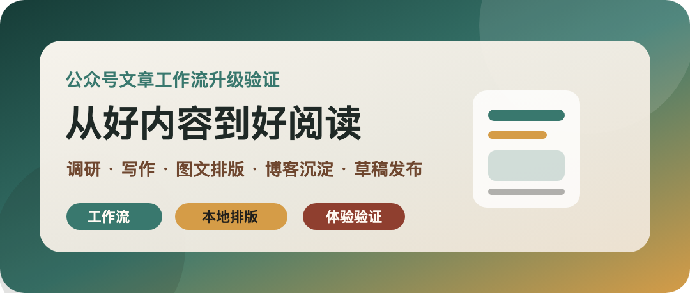
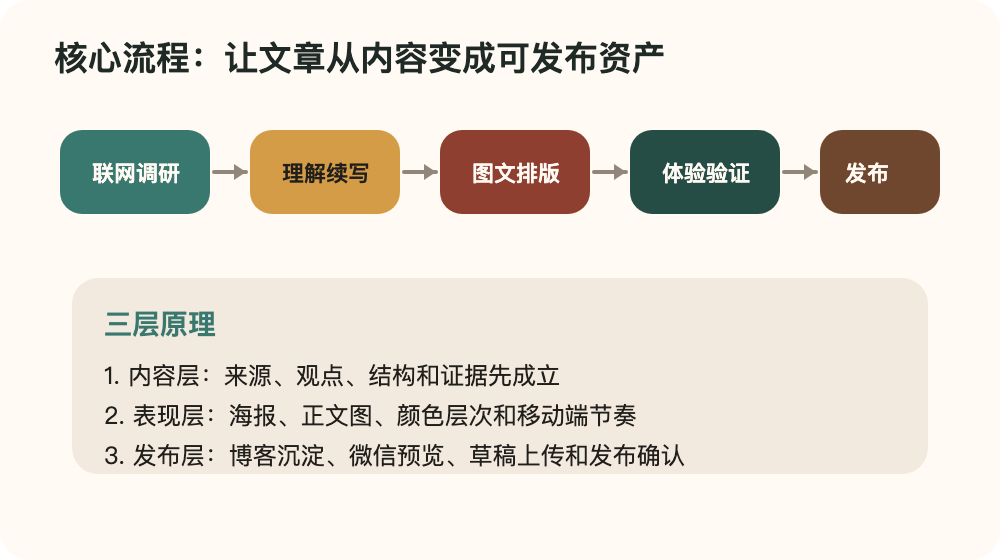
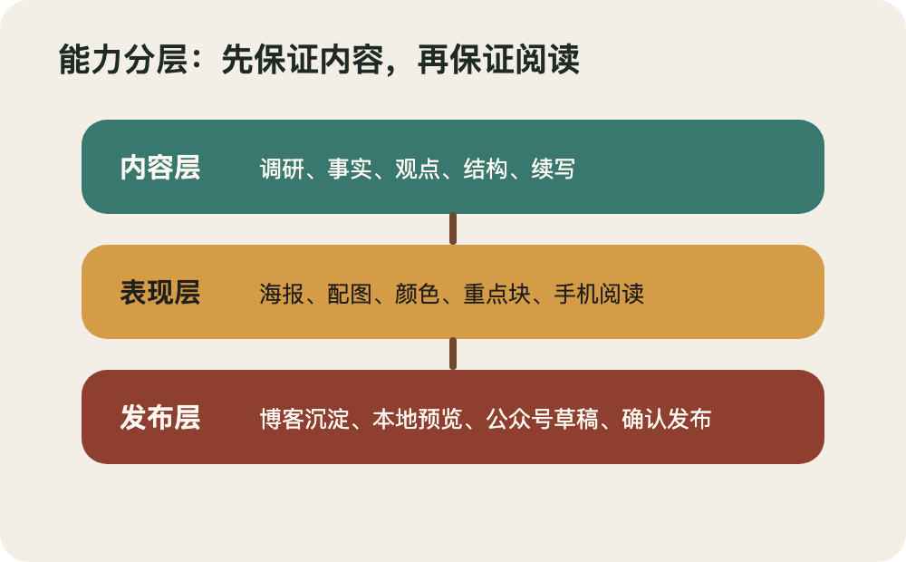

<section style="margin:0 auto;padding:22px 14px 36px;max-width:680px;background:#f4efe6;color:#211f1b;font-family:-apple-system,BlinkMacSystemFont,'PingFang SC','Microsoft YaHei',sans-serif;line-height:1.86;">
  <section style="padding:22px 18px 28px;border-radius:22px;background:#fffaf3;border:1px solid #eadfce;">

  <section style="margin:0 0 20px;padding:8px;border-radius:12px;background:#edf5f2;border:1px solid #d7e8e2;box-sizing:border-box;">
    
    <p style="margin:8px 0 0;color:#39786e;font-size:13px;line-height:1.5;text-align:center;">封面海报</p>
  </section>

<h1 style="font-size:26px;line-height:1.35;margin:0 0 18px;color:#1f2926;font-weight:800;">这个微信文章工作流，到底解决了什么问题？</h1>
<blockquote style="margin:22px 0;padding:16px 18px;border-left:5px solid #d59c47;border-radius:0 14px 14px 0;background:#fbf1de;color:#3d352d;font-size:16px;line-height:1.85;font-weight:600;">它不是一个“帮我写篇文章”的模板，而是一条从选题、调研、写作、图文排版、博客沉淀，到公众号草稿的完整生产线。</blockquote>
<section style="margin:26px 0;padding:8px;border-radius:12px;background:#f7f1e8;border:1px solid #eadfce;box-sizing:border-box;"><p style="margin:8px 0 0;color:#92867a;font-size:13px;line-height:1.55;text-align:center;">核心流程图：从调研到发布的文章生产线</p></section>
<h2 style="margin:34px 0 14px;padding:11px 14px;border-left:5px solid #39786e;border-radius:0 12px 12px 0;background:#edf5f2;color:#254d46;font-size:20px;line-height:1.45;font-weight:800;">背景：以前的问题不是不会写，而是链路断了</h2>
<p style="margin:13px 0;color:#211f1b;font-size:16px;line-height:1.88;">单独生成一篇文章并不难。</p>
<p style="margin:13px 0;color:#211f1b;font-size:16px;line-height:1.88;">真正麻烦的是，公众号文章不是纯文本。它同时需要事实、结构、封面、配图、排版、移动端阅读体验，还要能留存在博客里，最后再进入公众号草稿箱。</p>
<p style="margin:13px 0;color:#211f1b;font-size:16px;line-height:1.88;">过去这几个步骤容易散掉：</p>
<ul style="margin:16px 0;padding:14px 18px 14px 2em;border-radius:16px;background:#eef6f3;color:#211f1b;font-size:15px;line-height:1.8;">
<li style="margin:7px 0;">调研和写作是一段流程。</li>
<li style="margin:7px 0;">博客正文文档是另一段流程。</li>
<li style="margin:7px 0;">微信排版又是另一段流程。</li>
<li style="margin:7px 0;">封面、正文图、素材上传和草稿发布经常临时处理。</li>
</ul>
<p style="margin:13px 0;color:#211f1b;font-size:16px;line-height:1.88;">结果就是内容本身可能不错，但读者在手机上看到的是一大坨文字。读不下去，文章就等于没有完成。</p>
<h2 style="margin:34px 0 14px;padding:11px 14px;border-left:5px solid #39786e;border-radius:0 12px 12px 0;background:#edf5f2;color:#254d46;font-size:20px;line-height:1.45;font-weight:800;">核心流程：先把内容变成资产，再考虑发布</h2>
<p style="margin:13px 0;color:#211f1b;font-size:16px;line-height:1.88;">这个工作流现在的流程被拆成六步。</p>
<h3 style="margin:24px 0 10px;color:#7a4e34;font-size:17px;line-height:1.45;font-weight:800;">1. 调研</h3>
<p style="margin:13px 0;color:#211f1b;font-size:16px;line-height:1.88;">如果主题涉及新闻、产品、工具接口、价格、政策、版本变化，就先联网查资料。</p>
<p style="margin:13px 0;color:#211f1b;font-size:16px;line-height:1.88;">它要求保留来源，不允许凭感觉编事实、编数据、编截图。</p>
<h3 style="margin:24px 0 10px;color:#7a4e34;font-size:17px;line-height:1.45;font-weight:800;">2. 理解</h3>
<p style="margin:13px 0;color:#211f1b;font-size:16px;line-height:1.88;">写之前先判断这篇文章到底要讲什么：</p>
<ul style="margin:16px 0;padding:14px 18px 14px 2em;border-radius:16px;background:#eef6f3;color:#211f1b;font-size:15px;line-height:1.8;">
<li style="margin:7px 0;">核心观点是什么？</li>
<li style="margin:7px 0;">读者为什么要看？</li>
<li style="margin:7px 0;">哪些信息应该删掉？</li>
<li style="margin:7px 0;">哪些地方需要图、截图或流程图？</li>
<li style="margin:7px 0;">适合教程、分析、观点、清单，还是案例复盘？</li>
</ul>
<p style="margin:13px 0;color:#211f1b;font-size:16px;line-height:1.88;">这一步的作用，是避免文章变成资料拼贴。</p>
<h3 style="margin:24px 0 10px;color:#7a4e34;font-size:17px;line-height:1.45;font-weight:800;">3. 写作</h3>
<p style="margin:13px 0;color:#211f1b;font-size:16px;line-height:1.88;">正文输出的是博客友好的文档。</p>
<p style="margin:13px 0;color:#211f1b;font-size:16px;line-height:1.88;">它必须保留标题、分类、标签、封面、来源和正文图片。也就是说，这份正文文档不只是给公众号用，也能沉淀到本地博客里。</p>
<h3 style="margin:24px 0 10px;color:#7a4e34;font-size:17px;line-height:1.45;font-weight:800;">4. 图文排版</h3>
<p style="margin:13px 0;color:#211f1b;font-size:16px;line-height:1.88;">公众号排版优先交给本地排版流程。</p>
<p style="margin:13px 0;color:#211f1b;font-size:16px;line-height:1.88;">它负责预览、转换、主题、微信网页、素材和草稿相关能力。当前工作流则负责决定文章结构、主题方向和是否允许产生远程副作用。</p>
<h3 style="margin:24px 0 10px;color:#7a4e34;font-size:17px;line-height:1.45;font-weight:800;">5. 阅读体验验证</h3>
<p style="margin:13px 0;color:#211f1b;font-size:16px;line-height:1.88;">这是这次升级最关键的地方。</p>
<p style="margin:13px 0;color:#211f1b;font-size:16px;line-height:1.88;">文章必须有封面/海报、正文配图、视觉断点、颜色层次和移动端可读性。否则不能算完成。</p>
<h3 style="margin:24px 0 10px;color:#7a4e34;font-size:17px;line-height:1.45;font-weight:800;">6. 发布</h3>
<p style="margin:13px 0;color:#211f1b;font-size:16px;line-height:1.88;">默认只生成本地草稿和预览。</p>
<p style="margin:13px 0;color:#211f1b;font-size:16px;line-height:1.88;">只有明确要求“上传草稿”，才会创建公众号草稿。只有明确说“确认发布”或“直接发布”，才会进入发布动作。</p>
<h2 style="margin:34px 0 14px;padding:11px 14px;border-left:5px solid #39786e;border-radius:0 12px 12px 0;background:#edf5f2;color:#254d46;font-size:20px;line-height:1.45;font-weight:800;">原理：三层分工，而不是一个脚本包打天下</h2>
<p style="margin:13px 0;color:#211f1b;font-size:16px;line-height:1.88;">这个工作流的设计不是把所有事情都自己重写一遍，而是做分工。</p>
<section style="margin:26px 0;padding:8px;border-radius:12px;background:#f7f1e8;border:1px solid #eadfce;box-sizing:border-box;"><p style="margin:8px 0 0;color:#92867a;font-size:13px;line-height:1.55;text-align:center;">能力分层图：内容层、表现层、发布层</p></section>
<p style="margin:13px 0;color:#211f1b;font-size:16px;line-height:1.88;"><strong style="color:#8f3f2f;font-weight:800;">第一层：内容层。</strong></p>
<p style="margin:13px 0;color:#211f1b;font-size:16px;line-height:1.88;">负责调研、理解、续写、结构和事实边界。</p>
<p style="margin:13px 0;color:#211f1b;font-size:16px;line-height:1.88;"><strong style="color:#8f3f2f;font-weight:800;">第二层：表现层。</strong></p>
<p style="margin:13px 0;color:#211f1b;font-size:16px;line-height:1.88;">负责海报、配图、图文节奏、颜色层次和高流量公众号常见的阅读路径。</p>
<p style="margin:13px 0;color:#211f1b;font-size:16px;line-height:1.88;"><strong style="color:#8f3f2f;font-weight:800;">第三层：发布层。</strong></p>
<p style="margin:13px 0;color:#211f1b;font-size:16px;line-height:1.88;">负责本地博客、本地网页、公众号预览、草稿上传和发布确认。</p>
<p style="margin:13px 0;color:#211f1b;font-size:16px;line-height:1.88;">这样做的好处是，每一层都能被验证。</p>
<p style="margin:13px 0;color:#211f1b;font-size:16px;line-height:1.88;">不是“看起来差不多”，而是可以检查：有没有封面、有没有图、有没有网页预览、有没有颜色层次、有没有草稿风险。</p>
<h2 style="margin:34px 0 14px;padding:11px 14px;border-left:5px solid #39786e;border-radius:0 12px 12px 0;background:#edf5f2;color:#254d46;font-size:20px;line-height:1.45;font-weight:800;">它解决了什么问题？</h2>
<h3 style="margin:24px 0 10px;color:#7a4e34;font-size:17px;line-height:1.45;font-weight:800;">解决 1：内容好但读不下去</h3>
<p style="margin:13px 0;color:#211f1b;font-size:16px;line-height:1.88;">现在文章不允许纯文字到底。</p>
<p style="margin:13px 0;color:#211f1b;font-size:16px;line-height:1.88;">封面负责第一眼，正文图负责解释和停顿，引用和列表负责打断密度，颜色层次负责帮助读者扫描。</p>
<h3 style="margin:24px 0 10px;color:#7a4e34;font-size:17px;line-height:1.45;font-weight:800;">解决 2：博客和公众号两套内容割裂</h3>
<p style="margin:13px 0;color:#211f1b;font-size:16px;line-height:1.88;">正文文档先作为长期资产保存。</p>
<p style="margin:13px 0;color:#211f1b;font-size:16px;line-height:1.88;">公众号网页是它的发布形态之一，而不是唯一产物。这样文章能同时进入博客和公众号。</p>
<h3 style="margin:24px 0 10px;color:#7a4e34;font-size:17px;line-height:1.45;font-weight:800;">解决 3：草稿发布太容易误操作</h3>
<p style="margin:13px 0;color:#211f1b;font-size:16px;line-height:1.88;">上传草稿和直接发布被明确区分。</p>
<p style="margin:13px 0;color:#211f1b;font-size:16px;line-height:1.88;">默认只本地生成，远程动作必须有明确意图。发布更需要明确确认。</p>
<h3 style="margin:24px 0 10px;color:#7a4e34;font-size:17px;line-height:1.45;font-weight:800;">解决 4：排版靠感觉，不可验证</h3>
<p style="margin:13px 0;color:#211f1b;font-size:16px;line-height:1.88;">新增的阅读体验验证脚本会检查：</p>
<ul style="margin:16px 0;padding:14px 18px 14px 2em;border-radius:16px;background:#eef6f3;color:#211f1b;font-size:15px;line-height:1.8;">
<li style="margin:7px 0;">是否有封面/海报</li>
<li style="margin:7px 0;">是否有正文图</li>
<li style="margin:7px 0;">是否有多级标题</li>
<li style="margin:7px 0;">是否有引用或列表</li>
<li style="margin:7px 0;">是否存在过长段落</li>
<li style="margin:7px 0;">网页预览是否有图片和颜色层次</li>
</ul>
<p style="margin:13px 0;color:#211f1b;font-size:16px;line-height:1.88;">这让“好不好读”至少有了最低标准。</p>
<h2 style="margin:34px 0 14px;padding:11px 14px;border-left:5px solid #39786e;border-radius:0 12px 12px 0;background:#edf5f2;color:#254d46;font-size:20px;line-height:1.45;font-weight:800;">最终能做到什么效果？</h2>
<p style="margin:13px 0;color:#211f1b;font-size:16px;line-height:1.88;">最终它可以把一个选题变成一套完整文章资产：</p>
<ul style="margin:16px 0;padding:14px 18px 14px 2em;border-radius:16px;background:#eef6f3;color:#211f1b;font-size:15px;line-height:1.8;">
<li style="margin:7px 0;">正文文档：可沉淀到博客</li>
<li style="margin:7px 0;">微信网页：适合公众号预览</li>
<li style="margin:7px 0;">本地预览：方便发布前检查</li>
<li style="margin:7px 0;">检查报告：记录排版和发布前风险</li>
<li style="margin:7px 0;">封面/海报和正文图片</li>
<li style="margin:7px 0;">可选本地博客发布</li>
<li style="margin:7px 0;">可选公众号草稿</li>
<li style="margin:7px 0;">明确确认后的公众号发布</li>
</ul>
<h2 style="margin:34px 0 14px;padding:11px 14px;border-left:5px solid #39786e;border-radius:0 12px 12px 0;background:#edf5f2;color:#254d46;font-size:20px;line-height:1.45;font-weight:800;">这次验证的结论</h2>
<p style="margin:13px 0;color:#211f1b;font-size:16px;line-height:1.88;">这个工作流的核心价值不是“自动写文章”。</p>
<p style="margin:13px 0;color:#211f1b;font-size:16px;line-height:1.88;">它真正解决的是：把一篇文章从零散内容，变成可以阅读、可以沉淀、可以预览、可以发布、可以检查的完整内容资产。</p>
<p style="margin:13px 0;color:#211f1b;font-size:16px;line-height:1.88;">如果只追求文字完成，公众号文章很容易停在半成品。</p>
<p style="margin:13px 0;color:#211f1b;font-size:16px;line-height:1.88;">但如果把图文、排版、颜色层次和验证放进流程里，文章才更接近真正能发布的状态。</p>
  </section>
</section>
